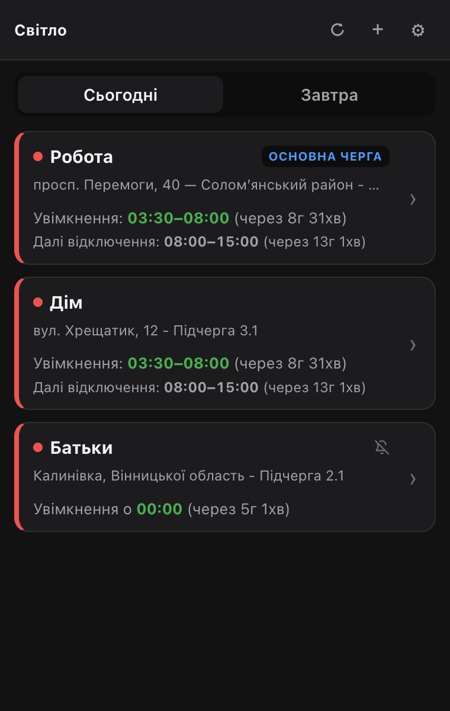

Світло
СвітлоКолір — це стан
Значок на панелі показує вашу основну чергу, навіть коли вікно розширення закрите. Поруч — число: години, поки лишається більше години, далі хвилини.
світло є
скоро зникне
немає
графік невідомий
